Relation (Relasi Ekuivalen)
Pelajari konsep relasi biner, sifat-sifat relasi (refleksif, simetris, antisimetris, transitif), hingga pembuktian relasi ekuivalen beserta kelas ekuivalensinya.
1. Dasar-Dasar Relasi
Secara intuitif, relasi menyatakan hubungan antara anggota-anggota dari dua himpunan. Relasi yang sering kita temukan sehari-hari, misalnya relasi antara siswa dengan mata pelajaran yang mereka ambil, relasi antara nama orang dengan nomor teleponnya, dan sebagainya.
Misalkan $A$ dan $B$ adalah himpunan. Sebuah relasi biner $R$ dari $A$ ke $B$ adalah subset (himpunan bagian) dari Cartesian product $A \times B$.
Dengan kata lain, $R \subseteq A \times B$. Hubungan ini menghubungkan elemen-elemen di $A$ dengan elemen-elemen di $B$.
Notasi Relasi
- Kita menuliskan $aRb$ jika $(a, b) \in R$, yang berarti "elemen $a$ berelasi dengan elemen $b$ melalui relasi $R$".
- Sebaliknya, kita menuliskan $a \not{R} b$ jika $(a, b) \notin R$, yang berarti "elemen $a$ tidak berelasi dengan elemen $b$ melalui relasi $R$".
Misalkan $A$ adalah himpunan siswa di sekolahmu, dan $B$ adalah himpunan mata pelajaran yang ditawarkan. Kita definisikan relasi $R$ berisi pasangan $(a, b)$ di mana siswa $a$ terdaftar pada kelas mata pelajaran $b$.
Misalkan Budi dan Siti mengambil kelas Matematika Diskrit, dan Budi juga mengambil kelas Fisika. Maka:
- $(\text{Budi}, \text{Matematika}) \in R$ → $\text{Budi } R \text{ Matematika}$
- $(\text{Siti}, \text{Matematika}) \in R$ → $\text{Siti } R \text{ Matematika}$
- $(\text{Budi}, \text{Fisika}) \in R$ → $\text{Budi } R \text{ Fisika}$
- $(\text{Siti}, \text{Fisika}) \notin R$ → $\text{Siti } \not{R} \text{ Fisika}$ (Siti tidak mengambil kelas Fisika)
Misalkan $A = \{0, 1, 2\}$ dan $B = \{a, b\}$. Himpunan $R = \{(0, a), (0, b), (1, a), (2, b)\}$ merupakan relasi dari $A$ ke $B$.
Artinya $0 R a$, $0 R b$, $1 R a$, dan $2 R b$. Namun, $1 \not{R} b$ dan $2 \not{R} a$. Relasi ini dapat kita sajikan dalam tabel kebenaran / matriks keanggotaan relasi di bawah ini:
| A \ B | a | b |
|---|---|---|
| 0 | ✓ (True) | ✓ (True) |
| 1 | ✓ (True) | ✗ (False) |
| 2 | ✗ (False) | ✓ (True) |
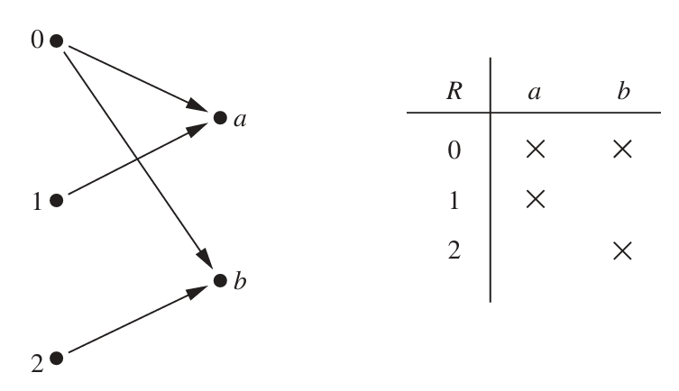
Fungsi Sebagai Relasi
Ingat kembali bahwa fungsi adalah kasus khusus dari relasi. Sebuah fungsi $f$ dari $A$ ke $B$ menetapkan tepat satu elemen di $B$ untuk setiap elemen di $A$. Kita dapat merepresentasikan fungsi ini sebagai relasi.
Sebuah relasi pada himpunan A adalah relasi dari $A$ ke $A$. Dengan kata lain, relasi tersebut merupakan subset dari $A \times A$.
Misalkan $A$ adalah himpunan $\{1, 2, 3, 4\}$. Tuliskan semua pasangan berurutan yang ada dalam relasi $R = \{(a, b) \mid a \text{ membagi } b\}$.
Notasi "$a$ membagi $b$" ditulis $a \mid b$, artinya $b$ habis dibagi oleh $a$ (sisa pembagiannya $0$). Kita tinjau setiap elemen di $A = \{1, 2, 3, 4\}$ sebagai $a$ dan mencari nilai $b$ yang habis dibagi oleh $a$:
- Untuk $a = 1$: $1$ membagi semua bilangan bulat. Pasangan yang terbentuk: $(1, 1), (1, 2), (1, 3), (1, 4)$.
- Untuk $a = 2$: $2$ membagi bilangan genap. Pasangan yang terbentuk: $(2, 2), (2, 4)$.
- Untuk $a = 3$: $3$ membagi $3$. Pasangan yang terbentuk: $(3, 3)$.
- Untuk $a = 4$: $4$ membagi $4$. Pasangan yang terbentuk: $(4, 4)$.
Maka, himpunan relasi lengkapnya adalah:
$$R = \{(1, 1), (1, 2), (1, 3), (1, 4), (2, 2), (2, 4), (3, 3), (4, 4)\}$$
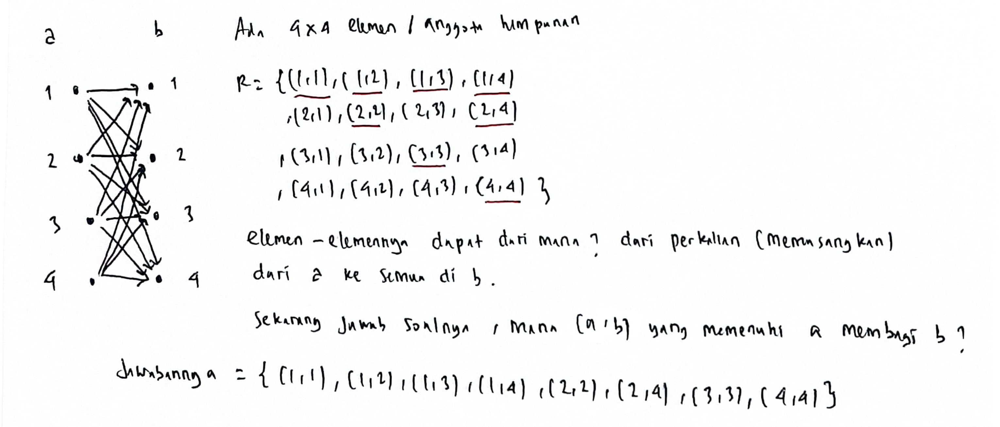
Perhatikan relasi berikut pada himpunan bilangan bulat $\mathbb{Z}$:
- $R_1 = \{(a, b) \mid a \le b\}$
- $R_2 = \{(a, b) \mid a > b\}$
- $R_3 = \{(a, b) \mid a = b \lor a = -b\}$
- $R_4 = \{(a, b) \mid a = b\}$
- $R_5 = \{(a, b) \mid a = b + 1\}$
- $R_6 = \{(a, b) \mid a + b \le 3\}$
Tentukan relasi mana saja yang memuat masing-masing pasangan berurutan berikut: $(1, 1), (1, 2), (2, 1), (1, -1),$ dan $(2, 2)$.
Kita uji masing-masing pasangan untuk keenam relasi tersebut:
-
Pasangan $(1, 1)$
- $R_1$ ($1 \le 1$ → Benar): $(1,1) \in R_1$
- $R_2$ ($1 > 1$ → Salah): $(1,1) \notin R_2$
- $R_3$ ($1 = 1 \lor 1 = -1$ → Benar): $(1,1) \in R_3$
- $R_4$ ($1 = 1$ → Benar): $(1,1) \in R_4$
- $R_5$ ($1 = 1 + 1$ → Salah): $(1,1) \notin R_5$
- $R_6$ ($1 + 1 \le 3$ → Benar): $(1,1) \in R_6$
-
Pasangan $(1, 2)$
- $R_1$ ($1 \le 2$ → Benar): $(1,2) \in R_1$
- $R_2$ ($1 > 2$ → Salah): $(1,2) \notin R_2$
- $R_3$ ($1 = 2 \lor 1 = -2$ → Salah): $(1,2) \notin R_3$
- $R_4$ ($1 = 2$ → Salah): $(1,2) \notin R_4$
- $R_5$ ($1 = 2 + 1$ → Salah): $(1,2) \notin R_5$
- $R_6$ ($1 + 2 \le 3$ → Benar): $(1,2) \in R_6$
-
Pasangan $(2, 1)$
- $R_1$ ($2 \le 1$ → Salah): $(2,1) \notin R_1$
- $R_2$ ($2 > 1$ → Benar): $(2,1) \in R_2$
- $R_3$ ($2 = 1 \lor 2 = -1$ → Salah): $(2,1) \notin R_3$
- $R_4$ ($2 = 1$ → Salah): $(2,1) \notin R_4$
- $R_5$ ($2 = 1 + 1$ → Benar): $(2,1) \in R_5$
- $R_6$ ($2 + 1 \le 3$ → Benar): $(2,1) \in R_6$
-
Pasangan $(1, -1)$
- $R_1$ ($1 \le -1$ → Salah): $(1,-1) \notin R_1$
- $R_2$ ($1 > -1$ → Benar): $(1,-1) \in R_2$
- $R_3$ ($1 = -1 \lor 1 = -(-1)$ → Benar): $(1,-1) \in R_3$
- $R_4$ ($1 = -1$ → Salah): $(1,-1) \notin R_4$
- $R_5$ ($1 = -1 + 1$ → Salah): $(1,-1) \notin R_5$
- $R_6$ ($1 + (-1) \le 3$ → Benar): $(1,-1) \in R_6$
-
Pasangan $(2, 2)$
- $R_1$ ($2 \le 2$ → Benar): $(2,2) \in R_1$
- $R_2$ ($2 > 2$ → Salah): $(2,2) \notin R_2$
- $R_3$ ($2 = 2 \lor 2 = -2$ → Benar): $(2,2) \in R_3$
- $R_4$ ($2 = 2$ → Benar): $(2,2) \in R_4$
- $R_5$ ($2 = 2 + 1$ → Salah): $(2,2) \notin R_5$
- $R_6$ ($2 + 2 \le 3$ → Salah): $(2,2) \notin R_6$
Berikut adalah tabel ringkasan keanggotaan untuk memperjelas pemahaman:
| Relasi | (1, 1) | (1, 2) | (2, 1) | (1, -1) | (2, 2) |
|---|---|---|---|---|---|
| R₁ (\(a \le b\)) | ✓ (True) | ✓ (True) | ✗ (False) | ✗ (False) | ✓ (True) |
| R₂ (\(a > b\)) | ✗ (False) | ✗ (False) | ✓ (True) | ✓ (True) | ✗ (False) |
| R₃ (\(a = b \lor a = -b\)) | ✓ (True) | ✗ (False) | ✗ (False) | ✓ (True) | ✓ (True) |
| R₄ (\(a = b\)) | ✓ (True) | ✗ (False) | ✗ (False) | ✗ (False) | ✓ (True) |
| R₅ (\(a = b + 1\)) | ✗ (False) | ✗ (False) | ✓ (True) | ✗ (False) | ✗ (False) |
| R₆ (\(a + b \le 3\)) | ✓ (True) | ✓ (True) | ✓ (True) | ✓ (True) | ✗ (False) |

2. Sifat-Sifat Relasi
Sebuah relasi pada himpunan tertentu dapat diklasifikasikan berdasarkan sifat-sifat matematisnya. Tiga sifat utama yang sering dipelajari adalah Refleksif (Reflexive), Simetris (Symmetric) / Antisimetris (Antisymmetric), dan Transitif (Transitive).
Refleksif (Reflexive)
Sebuah relasi $R$ pada himpunan $A$ disebut refleksif jika setiap elemen berelasi dengan dirinya sendiri. $$\forall a \in A, (a, a) \in R$$ Jika terdapat minimal satu elemen $a \in A$ di mana $(a, a) \notin R$, maka relasi tersebut tidak refleksif.
Perhatikan relasi berikut pada himpunan $A = \{1, 2, 3, 4\}$:
- $R_1 = \{(1, 1), (1, 2), (2, 1), (2, 2), (3, 4), (4, 1), (4, 4)\}$
- $R_2 = \{(1, 1), (1, 2), (2, 1)\}$
- $R_3 = \{(1, 1), (1, 2), (1, 4), (2, 1), (2, 2), (3, 3), (4, 1), (4, 4)\}$
- $R_4 = \{(2, 1), (3, 1), (3, 2), (4, 1), (4, 2), (4, 3)\}$
- $R_5 = \{(1, 1), (1, 2), (1, 3), (1, 4), (2, 2), (2, 3), (2, 4), (3, 3), (3, 4), (4, 4)\}$
- $R_6 = \{(3, 4)\}$
Manakah di antara relasi berikut yang bersifat refleksif?
Untuk menjadi refleksif, setiap elemen pada himpunan $A = \{1, 2, 3, 4\}$ harus berpasangan dengan dirinya sendiri. Jadi, relasi harus memuat semua pasangan berikut:
$$(1, 1), (2, 2), (3, 3), \text{ dan } (4, 4)$$
Mari kita cek relasi-relasi di atas:
- $R_1$: Tidak memuat $(3, 3)$ → Tidak Refleksif.
- $R_2$: Tidak memuat $(2, 2), (3, 3), (4, 4)$ → Tidak Refleksif.
- $R_3$: Memuat $(1, 1), (2, 2), (3, 3),$ dan $(4, 4)$ → Refleksif.
- $R_4$: Tidak memuat satu pun pasangan $(a, a)$ → Tidak Refleksif.
- $R_5$: Memuat $(1, 1), (2, 2), (3, 3),$ dan $(4, 4)$ → Refleksif.
- $R_6$: Hanya memuat $(3, 4)$ → Tidak Refleksif.
Jadi, relasi yang bersifat refleksif adalah $R_3$ dan $R_5$.

Perhatikan relasi pada himpunan bilangan bulat $\mathbb{Z}$ yang telah kita definisikan pada Soal 2 sebelumnya:
- $R_1 = \{(a, b) \mid a \le b\}$
- $R_2 = \{(a, b) \mid a > b\}$
- $R_3 = \{(a, b) \mid a = b \lor a = -b\}$
- $R_4 = \{(a, b) \mid a = b\}$
- $R_5 = \{(a, b) \mid a = b + 1\}$
- $R_6 = \{(a, b) \mid a + b \le 3\}$
Manakah relasi yang bersifat refleksif?
Kita uji syarat refleksif $(a, a) \in R$ untuk setiap bilangan bulat $a$:
- $R_1$ ($a \le b$): Karena $a \le a$ selalu bernilai benar untuk setiap bilangan bulat $a$, maka $R_1$ bersifat Refleksif.
- $R_2$ ($a > b$): Karena $a > a$ bernilai salah (tidak mungkin sebuah bilangan lebih besar dari dirinya sendiri), maka $R_2$ Tidak Refleksif.
- $R_3$ ($a = b \lor a = -b$): Substitusi $b = a$ menghasilkan $a = a \lor a = -a$. Karena bagian $a = a$ selalu benar, maka $R_3$ bersifat Refleksif.
- $R_4$ ($a = b$): Substitusi $b = a$ menghasilkan $a = a$ yang selalu benar, maka $R_4$ bersifat Refleksif.
- $R_5$ ($a = b + 1$): Substitusi $b = a$ menghasilkan $a = a + 1$ yang selalu bernilai salah (karena $0 \ne 1$). Contoh penyangkal: $(2, 2) \notin R_5$. Maka $R_5$ Tidak Refleksif.
- $R_6$ ($a + b \le 3$): Substitusi $b = a$ menghasilkan $2a \le 3$. Ini bernilai salah jika kita pilih bilangan bulat yang besar, misalnya $a = 2$, maka $2(2) = 4 \not\le 3$. Jadi $(2, 2) \notin R_6$. Maka $R_6$ Tidak Refleksif.
Jadi, relasi yang bersifat refleksif adalah $R_1$, $R_3$, dan $R_4$.

Apakah relasi "habis membagi" ($a \mid b$) pada himpunan bilangan bulat positif $\mathbb{Z}^+$ bersifat refleksif? Bagaimana jika didefinisikan pada himpunan semua bilangan bulat $\mathbb{Z}$?
-
Pada bilangan bulat positif $\mathbb{Z}^+$:
Untuk setiap bilangan bulat positif $a$, kita tahu bahwa $a$ selalu habis membagi dirinya sendiri (yaitu $a \mid a$, karena $a = 1 \cdot a$). Oleh karena itu, relasi ini bersifat Refleksif.
-
Pada seluruh bilangan bulat $\mathbb{Z}$:
Relasi tidak lagi bersifat refleksif! Mengapa? Karena terdapat bilangan bulat $0 \in \mathbb{Z}$. Berdasarkan definisi matematika, $0$ tidak membagi $0$ (pembagian dengan nol menghasilkan nilai yang tidak terdefinisi). Karena $(0, 0) \notin R$, maka relasi pada $\mathbb{Z}$ Tidak Refleksif.
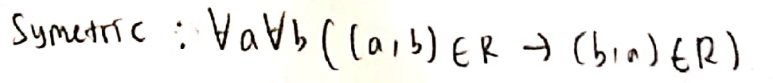
Simetris (Symmetric) & Antisimetris (Antisymmetric)
1. Simetris: Sebuah relasi $R$ pada himpunan $A$ disebut simetris jika untuk setiap pasangan $(a, b) \in R$, maka pasangan kebalikannya $(b, a)$ juga harus ada di $R$. $$\forall a \forall b ((a, b) \in R \implies (b, a) \in R)$$
2. Antisimetris: Sebuah relasi $R$ pada himpunan $A$ disebut antisimetris jika, untuk setiap $a$ dan $b$ di $A$, jika $(a, b)$ dan $(b, a)$ keduanya ada di $R$, maka $a$ harus sama dengan $b$. $$\forall a \forall b (((a, b) \in R \land (b, a) \in R) \implies a = b)$$ Catatan: Sifat ini berarti jika $a \ne b$, tidak boleh ada hubungan dua arah (timbal balik) antara $a$ dan $b$. Hubungan timbal balik hanya diperbolehkan pada elemen yang sama $(a, a)$.
Perhatikan kembali relasi-relasi pada himpunan $A = \{1, 2, 3, 4\}$ berikut:
- $R_1 = \{(1, 1), (1, 2), (2, 1), (2, 2), (3, 4), (4, 1), (4, 4)\}$
- $R_2 = \{(1, 1), (1, 2), (2, 1)\}$
- $R_3 = \{(1, 1), (1, 2), (1, 4), (2, 1), (2, 2), (3, 3), (4, 1), (4, 4)\}$
- $R_4 = \{(2, 1), (3, 1), (3, 2), (4, 1), (4, 2), (4, 3)\}$
- $R_5 = \{(1, 1), (1, 2), (1, 3), (1, 4), (2, 2), (2, 3), (2, 4), (3, 3), (3, 4), (4, 4)\}$
- $R_6 = \{(3, 4)\}$
Manakah relasi yang bersifat simetris? Dan manakah yang bersifat antisimetris?
1. Analisis Sifat Simetris
- $R_1$: Ada $(3, 4) \in R_1$ tapi $(4, 3) \notin R_1$ → Tidak Simetris.
- $R_2$: Ada $(1, 2)$ dan kebalikannya $(2, 1)$ ada di relasi → Simetris.
- $R_3$: Semua pasangan memiliki kebalikannya: $(1, 2) \leftrightarrow (2, 1)$ dan $(1, 4) \leftrightarrow (4, 1)$ → Simetris.
- $R_4$: Ada $(2, 1) \in R_4$ tapi $(1, 2) \notin R_4$ → Tidak Simetris.
- $R_5$: Ada $(1, 2) \in R_5$ tapi $(2, 1) \notin R_5$ → Tidak Simetris.
- $R_6$: Ada $(3, 4) \in R_6$ tapi $(4, 3) \notin R_6$ → Tidak Simetris.
2. Analisis Sifat Antisimetris
- $R_1$: Ada $(1, 2) \in R_1$ dan $(2, 1) \in R_1$, namun $1 \ne 2$ → Tidak Antisimetris.
- $R_2$: Ada $(1, 2) \in R_2$ dan $(2, 1) \in R_2$, namun $1 \ne 2$ → Tidak Antisimetris.
- $R_3$: Ada $(1, 2) \in R_3$ dan $(2, 1) \in R_3$, namun $1 \ne 2$ → Tidak Antisimetris.
- $R_4$: Tidak ada pasangan timbal balik untuk elemen yang berbeda (hanya satu arah) → Antisimetris.
- $R_5$: Hanya memiliki relasi satu arah untuk elemen yang berbeda (misalnya ada $(1, 2)$ tapi tidak ada $(2, 1)$) → Antisimetris.
- $R_6$: Hanya ada satu pasangan $(3, 4)$, dan tidak ada $(4, 3)$ → Antisimetris.
Kesimpulan:
- Relasi yang simetris: $R_2$ dan $R_3$.
- Relasi yang antisimetris: $R_4$, $R_5$, dan $R_6$.
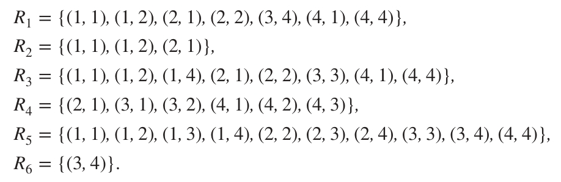
Perhatikan relasi pada himpunan bilangan bulat $\mathbb{Z}$ berikut:
- $R_1 = \{(a, b) \mid a \le b\}$
- $R_2 = \{(a, b) \mid a > b\}$
- $R_3 = \{(a, b) \mid a = b \lor a = -b\}$
- $R_4 = \{(a, b) \mid a = b\}$
- $R_5 = \{(a, b) \mid a = b + 1\}$
- $R_6 = \{(a, b) \mid a + b \le 3\}$
Manakah relasi yang bersifat simetris? Dan manakah yang bersifat antisimetris?
1. Analisis Sifat Simetris
- $R_1$ ($a \le b$): Jika $a \le b$, tidak selalu berlaku $b \le a$. Contoh: $(1, 2) \in R_1$, tapi $(2, 1) \notin R_1$. (Tidak Simetris).
- $R_2$ ($a > b$): Jika $a > b$, tidak mungkin $b > a$. Contoh: $(2, 1) \in R_2$ tapi $(1, 2) \notin R_2$. (Tidak Simetris).
- $R_3$ ($a = \pm b$): Jika $a = \pm b$, maka pasti berlaku $b = \pm a$. Jadi jika $(a, b) \in R_3$, maka $(b, a) \in R_3$. (Simetris).
- $R_4$ ($a = b$): Jika $a = b$, maka pasti $b = a$. (Simetris).
- $R_5$ ($a = b + 1$): Jika $a = b + 1$, maka $b = a - 1 \ne a + 1$. Contoh: $(2, 1) \in R_5$ tapi $(1, 2) \notin R_5$. (Tidak Simetris).
- $R_6$ ($a + b \le 3$): Karena penjumlahan bersifat komutatif ($a + b = b + a$), maka jika $a + b \le 3$ otomatis $b + a \le 3$. Jadi jika $(a, b) \in R_6$ maka $(b, a) \in R_6$. (Simetris).
2. Analisis Sifat Antisimetris
- $R_1$ ($a \le b$): Jika $a \le b$ dan $b \le a$, secara aljabar pasti berlaku $a = b$. (Antisimetris).
- $R_2$ ($a > b$): Di sini premis $(a,b) \in R_2 \land (b,a) \in R_2$ tidak pernah bisa terjadi (kontradiksi), sehingga pernyataan implikasinya bernilai True secara vacuous. (Antisimetris).
- $R_3$ ($a = \pm b$): Jika $(1, -1) \in R_3$ dan $(-1, 1) \in R_3$, namun $1 \ne -1$. (Tidak Antisimetris).
- $R_4$ ($a = b$): Relasi ini hanya menghubungkan elemen yang sama. Jadi jika $(a, b) \in R_4$ dan $(b, a) \in R_4$, otomatis $a = b$. (Antisimetris).
- $R_5$ ($a = b + 1$): Premis $a = b + 1 \land b = a + 1$ tidak pernah bisa dipenuhi (karena jika disubstitusi menjadi $a = a + 2$, yang mustahil). Maka secara vacuous bernilai True. (Antisimetris).
- $R_6$ ($a + b \le 3$): Kita bisa menemukan $(1, 2) \in R_6$ ($1+2=3 \le 3$) dan $(2, 1) \in R_6$ ($2+1=3 \le 3$), tetapi $1 \ne 2$. (Tidak Antisimetris).
Kesimpulan:
- Relasi yang simetris: $R_3$, $R_4$, dan $R_6$.
- Relasi yang antisimetris: $R_1$, $R_2$, $R_4$, dan $R_5$.
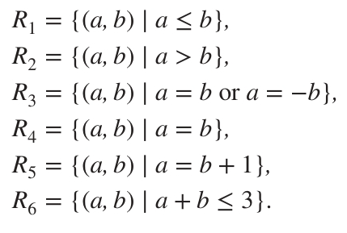
Apakah relasi "habis membagi" ($a \mid b$) pada himpunan bilangan bulat positif $\mathbb{Z}^+$ bersifat simetris? Apakah bersifat antisimetris?
-
Simetris?
Relasi ini Tidak Simetris. Contoh pembanding: $1 \mid 2$ (Benar), namun $2 \mid 1$ (Salah). Jadi $(1, 2) \in R$ tetapi $(2, 1) \notin R$. -
Antisimetris?
Relasi ini bersifat Antisimetris.
Bukti: Misalkan $a$ dan $b$ adalah bilangan bulat positif sedemikian rupa sehingga $a \mid b$ dan $b \mid a$.- $a \mid b \implies b = k \cdot a$ untuk suatu bilangan bulat positif $k$.
- $b \mid a \implies a = m \cdot b$ untuk suatu bilangan bulat positif $m$.
- Substitusi nilai $b$: $a = m \cdot (k \cdot a) \implies a = (m \cdot k) \cdot a$.
- Karena $a > 0$, kita bagi kedua ruas dengan $a$, sehingga diperoleh $1 = m \cdot k$.
- Karena $m$ dan $k$ adalah bilangan bulat positif, satu-satunya cara perkalian menghasilkan $1$ adalah jika $m = 1$ dan $k = 1$.
- Substitusi kembali nilai $k=1$ ke persamaan $b = k \cdot a$, kita peroleh $b = 1 \cdot a \implies b = a$.
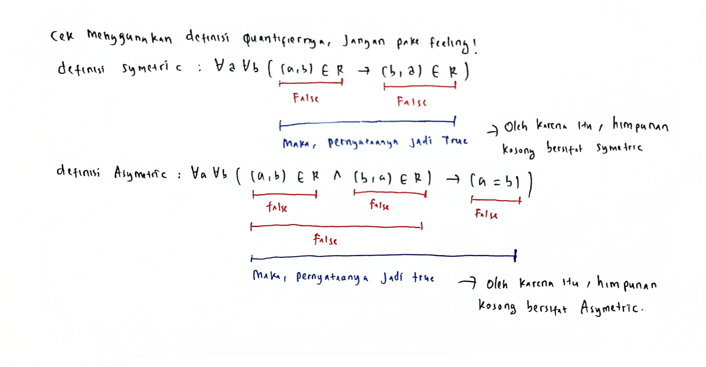
Perhatikan relasi kosong $R = \{\}$ pada himpunan tidak kosong $A \ne \{\}$. Apakah relasi kosong tersebut bersifat simetris? Apakah bersifat antisimetris?
Mari kita uji kedua definisi tersebut:
-
Uji Simetris:
Definisi simetris: $\forall a \forall b ((a, b) \in R \implies (b, a) \in R)$.
Karena $R = \{\}$ (tidak memiliki elemen sama sekali), maka pernyataan $(a, b) \in R$ selalu bernilai Salah (False).
Dalam tabel kebenaran logika matematika, sebuah implikasi $P \implies Q$ akan selalu bernilai Benar (True) jika premis $P$ bernilai Salah (ini disebut kebenaran yang kosong atau vacuously true).
Oleh karena itu, relasi kosong $R$ bersifat Simetris. -
Uji Antisimetris:
Definisi antisimetris: $\forall a \forall b (((a, b) \in R \land (b, a) \in R) \implies a = b)$.
Sama seperti kasus di atas, karena relasi $R$ kosong, maka premis $((a, b) \in R \land (b, a) \in R)$ selalu bernilai Salah (False).
Implikasi dengan premis yang bernilai Salah akan menghasilkan nilai Benar (True) secara vacuous.
Oleh karena itu, relasi kosong $R$ juga bersifat Antisimetris.
Kesimpulan: Relasi kosong $R = \{\}$ pada himpunan tidak kosong adalah relasi yang unik karena bersifat simetris sekaligus antisimetris!
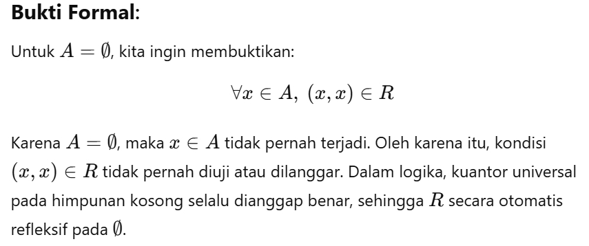
Misalkan himpunan $A = \{\}$ (himpunan kosong). Apakah relasi $R = \{\}$ pada himpunan kosong tersebut bersifat refleksif?
Mari kita kembali ke definisi refleksif:
$$\forall a \in A, (a, a) \in R$$
Kita ingin memeriksa apakah untuk semua elemen $a$ di $A$, berlaku $(a, a) \in R$.
Karena $A = \{\}$ tidak memiliki elemen sama sekali, maka tidak ada elemen $a \in A$ yang dapat membuktikan bahwa $(a, a) \notin R$ (tidak ada counterexample).
Secara matematika logika, pernyataan universal $\forall a \in \emptyset, P(a)$ selalu bernilai Benar (True) karena tidak ada elemen di domain kosong yang membuat pernyataan itu salah. Hal ini disebut vacuously true.
Jadi, relasi kosong $R = \{\}$ pada himpunan kosong $A = \{\}$ adalah relasi yang bersifat Refleksif.
Transitif (Transitive)
Sebuah relasi $R$ pada himpunan $A$ disebut transitif jika setiap kali elemen $a$ berhubungan dengan $b$, dan $b$ berhubungan dengan $c$, maka $a$ harus berhubungan langsung dengan $c$. $$\forall a \forall b \forall c (((a, b) \in R \land (b, c) \in R) \implies (a, c) \in R)$$
Perhatikan kembali relasi-relasi pada himpunan $A = \{1, 2, 3, 4\}$ berikut:
- $R_1 = \{(1, 1), (1, 2), (2, 1), (2, 2), (3, 4), (4, 1), (4, 4)\}$
- $R_2 = \{(1, 1), (1, 2), (2, 1)\}$
- $R_3 = \{(1, 1), (1, 2), (1, 4), (2, 1), (2, 2), (3, 3), (4, 1), (4, 4)\}$
- $R_4 = \{(2, 1), (3, 1), (3, 2), (4, 1), (4, 2), (4, 3)\}$
- $R_5 = \{(1, 1), (1, 2), (1, 3), (1, 4), (2, 2), (2, 3), (2, 4), (3, 3), (3, 4), (4, 4)\}$
- $R_6 = \{(3, 4)\}$
Manakah relasi yang bersifat transitif? Berikan analisis/verifikasi lengkapnya.
Mari kita tinjau satu per satu dengan mencari counterexample (kasus yang melanggar sifat transitif) jika ada:
-
$R_1$: Tidak Transitif.
Kita punya pasangan $(3, 4) \in R_1$ dan $(4, 1) \in R_1$. Agar transitif, harus ada pasangan $(3, 1)$ di $R_1$. Namun, $(3, 1) \notin R_1$. -
$R_2$: Tidak Transitif.
Kita punya pasangan $(2, 1) \in R_2$ dan $(1, 2) \in R_2$. Agar transitif, harus ada pasangan $(2, 2)$ di $R_2$. Namun, $(2, 2) \notin R_2$. -
$R_3$: Tidak Transitif.
Kita punya pasangan $(4, 1) \in R_3$ dan $(1, 2) \in R_3$. Agar transitif, harus ada pasangan $(4, 2)$ di $R_3$. Namun, $(4, 2) \notin R_3$. -
$R_4$: Transitif.
Kita dapat melakukan verifikasi pasangan berantai yang ada:- $(3, 2)$ dan $(2, 1) \implies (3, 1)$ → Ada di $R_4$.
- $(4, 2)$ dan $(2, 1) \implies (4, 1)$ → Ada di $R_4$.
- $(4, 3)$ dan $(3, 1) \implies (4, 1)$ → Ada di $R_4$.
- $(4, 3)$ dan $(3, 2) \implies (4, 2)$ → Ada di $R_4$.
-
$R_5$: Transitif.
Relasi ini adalah relasi $\le$ (kurang dari sama dengan) pada himpunan $\{1, 2, 3, 4\}$. Secara matematis, jika $a \le b$ dan $b \le c$, maka pasti $a \le c$. Maka $R_5$ bersifat transitif. -
$R_6$: Transitif.
Relasi $R_6 = \{(3, 4)\}$ hanya berisi satu buah elemen. Kita tidak dapat menemukan dua pasangan berantai $(a, b)$ dan $(b, c)$ dengan $a \ne b$ dan $b \ne c$. Karena tidak ada rantai yang dapat diuji, maka implikasi definisi transitif bernilai True secara vacuous. Maka $R_6$ bersifat transitif.
Kesimpulan: Relasi yang bersifat transitif adalah $R_4$, $R_5$, dan $R_6$.
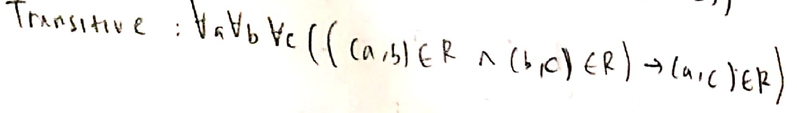

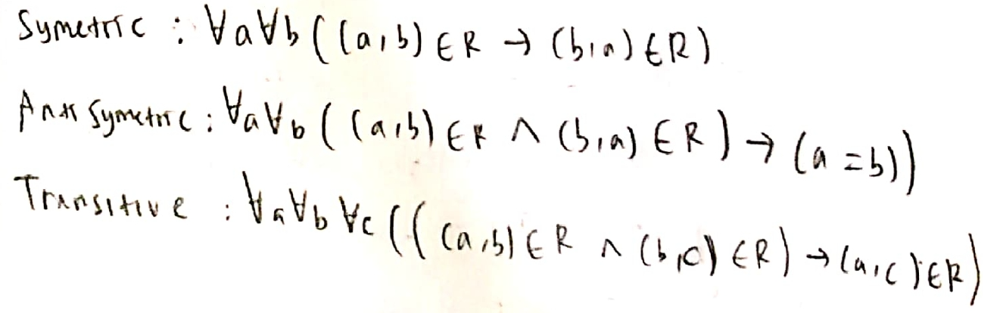
Ringkasan Sifat-Sifat Relasi
Berikut adalah tabel ringkasan sifat refleksif, simetris, antisimetris, dan transitif untuk mempermudah mengingat:
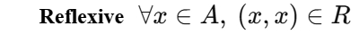
3. Equivalence Relation / Relasi Ekuivalen
Sebuah relasi $R$ pada himpunan $A$ disebut sebagai relasi ekuivalen jika dan hanya jika relasi tersebut memenuhi tiga sifat berikut sekaligus:
- Refleksif: $\forall a \in A, (a, a) \in R$
- Simetris: $\forall a \forall b ((a, b) \in R \implies (b, a) \in R)$
- Transitif: $\forall a \forall b \forall c (((a, b) \in R \land (b, c) \in R) \implies (a, c) \in R)$
Relasi ekuivalen sangat penting dalam matematika karena relasi ini membagi (mempartisi) himpunan asal menjadi kelompok-kelompok yang saling lepas. Kelompok ini disebut dengan Kelas Ekuivalen (Equivalence Classes).
Misalkan $R$ adalah relasi pada himpunan bilangan bulat $\mathbb{Z}$ sedemikian rupa sehingga $aRb$ jika dan hanya jika $a = b$ atau $a = -b$. Buktikan bahwa $R$ merupakan relasi ekuivalen!
Kita harus membuktikan ketiga sifat dari relasi ekuivalen untuk relasi $aRb \iff a = b \lor a = -b$:
-
Pembuktian Refleksif:
Kita harus menunjukkan bahwa $aRa$ benar untuk setiap $a \in \mathbb{Z}$.
Substitusi $b = a$ ke dalam syarat relasi: diperoleh $a = a$ atau $a = -a$. Karena pernyataan $a = a$ selalu bernilai Benar untuk semua bilangan bulat, maka secara keseluruhan syarat dipenuhi.
Contoh: $3 = 3$ (Benar), maka $3R3$. Jadi, relasi bersifat refleksif. -
Pembuktian Simetris:
Kita harus menunjukkan bahwa jika $aRb$, maka $bRa$ juga benar.
Asumsikan $aRb$ benar. Berdasarkan definisi relasi, kita tahu bahwa $a = b$ atau $a = -b$.- Jika $a = b$, maka secara aljabar $b = a$.
- Jika $a = -b$, maka kita kali kedua ruas dengan $-1$ sehingga diperoleh $b = -a$.
Contoh: Karena $3 = -(-3)$, maka $3R(-3)$ bernilai benar, dan kebalikannya $-3 = -(3)$, sehingga $-3R3$ juga benar. Jadi, relasi bersifat simetris. -
Pembuktian Transitif:
Kita harus menunjukkan bahwa jika $aRb$ dan $bRc$, maka $aRc$.
Asumsikan $aRb$ dan $bRc$ benar. Maka:- $aRb \implies a = b$ atau $a = -b$ (atau dapat ditulis $a = \pm b$).
- $bRc \implies b = c$ atau $b = -c$ (atau dapat ditulis $b = \pm c$).
$$a = \pm b = \pm (\pm c) = \pm c$$
Dari aljabar, kita tahu bahwa tanda $\pm (\pm c)$ akan menghasilkan $+c$ atau $-c$. Jadi $a = c$ atau $a = -c$, yang merupakan definisi dari $aRc$.
Contoh: Jika $3R(-3)$ dan $-3R3$, maka $3R3$ (Benar). Jadi, relasi bersifat transitif.
Karena relasi $R$ terbukti refleksif, simetris, dan transitif, maka $R$ adalah relasi ekuivalen.

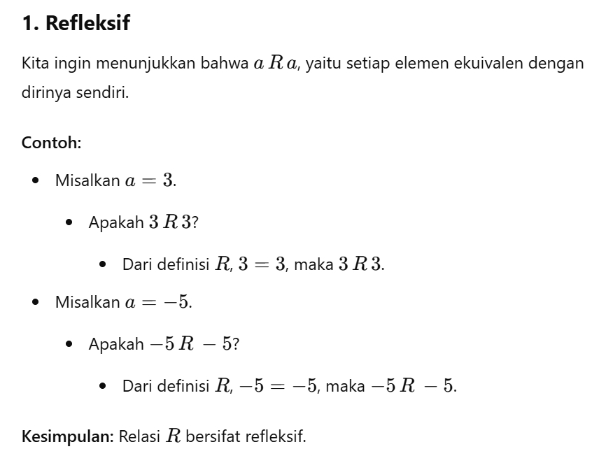
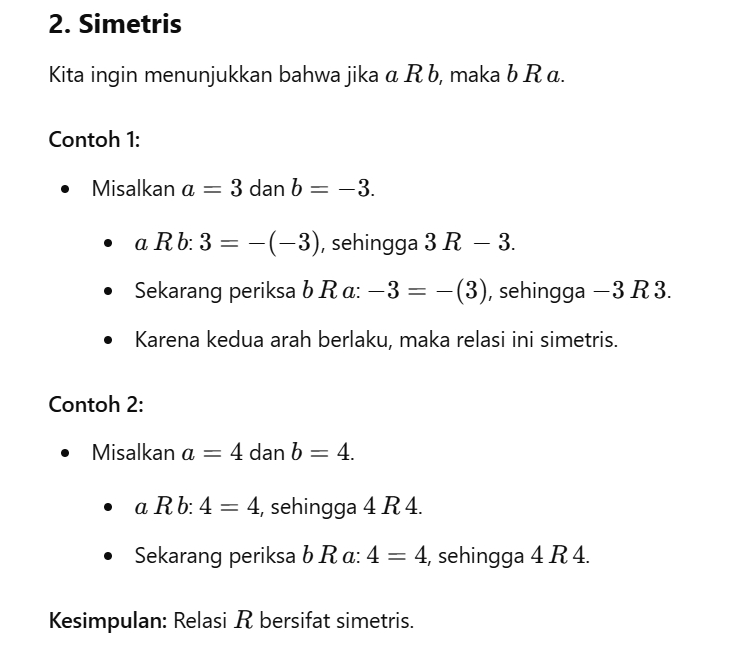
Misalkan $R$ adalah relasi pada himpunan bilangan riil $\mathbb{R}$ sedemikian rupa sehingga $aRb$ jika dan hanya jika $a - b$ adalah bilangan bulat (selisihnya $\in \mathbb{Z}$). Buktikan bahwa $R$ merupakan relasi ekuivalen!
Mari kita uji ketiga syarat relasi ekuivalen:
-
Refleksif:
Untuk setiap bilangan riil $a$, kita hitung selisihnya dengan dirinya sendiri:$$a - a = 0$$
Karena $0$ adalah bilangan bulat ($0 \in \mathbb{Z}$), maka $(a, a) \in R$ bernilai benar untuk semua $a \in \mathbb{R}$. Jadi, $R$ refleksif. -
Simetris:
Asumsikan $(a, b) \in R$. Ini berarti $a - b = k$ di mana $k$ adalah bilangan bulat ($k \in \mathbb{Z}$).
Kita hitung selisih kebalikannya:$$b - a = -(a - b) = -k$$
Because $k$ adalah bilangan bulat, maka $-k$ juga merupakan bilangan bulat (negatif dari bilangan bulat tetap bulat). Maka $(b, a) \in R$ benar. Jadi, $R$ simetris. -
Transitif:
Asumsikan $(a, b) \in R$ dan $(b, c) \in R$. Ini berarti:- $a - b = k$ untuk suatu $k \in \mathbb{Z}$
- $b - c = m$ untuk suatu $m \in \mathbb{Z}$
$$(a - b) + (b - c) = k + m \implies a - c = k + m$$
Karena $k$ dan $m$ adalah bilangan bulat, maka jumlah mereka $k + m$ juga pasti merupakan bilangan bulat. Maka $(a, c) \in R$ benar. Jadi, $R$ transitif.
Karena $R$ refleksif, simetris, dan transitif, maka terbukti bahwa $R$ adalah relasi ekuivalen.
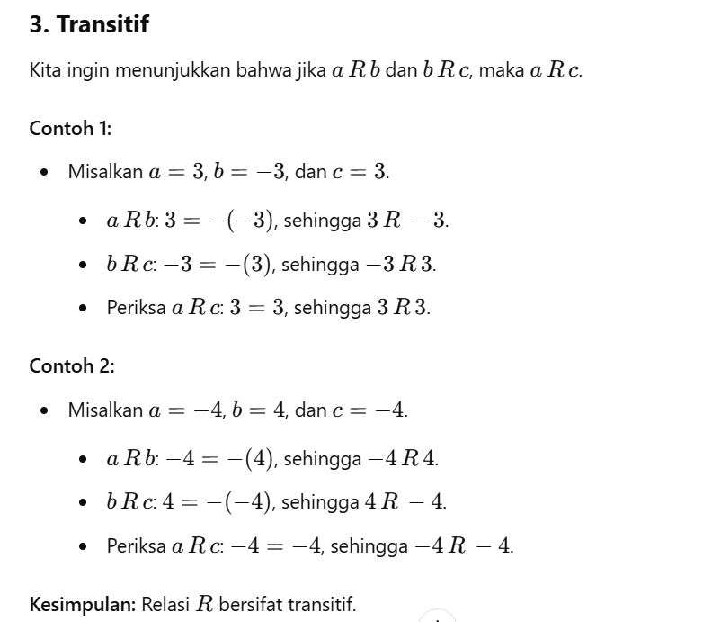
Misalkan $m$ adalah bilangan bulat dengan $m > 1$. Buktikan bahwa relasi kongruen modulo $m$ yang didefinisikan sebagai $R = \{(a, b) \mid a \equiv b \pmod m\}$ merupakan relasi ekuivalen pada himpunan bilangan bulat $\mathbb{Z}$.
Ingat kembali arti dari $a \equiv b \pmod m$. Notasi ini berarti $a - b$ habis dibagi oleh $m$, atau terdapat bilangan bulat $k$ sedemikian rupa sehingga $a - b = k \cdot m$ (ditulis $m \mid (a - b)$).
-
Refleksif:
Untuk setiap bilangan bulat $a$, kita hitung $a - a = 0$.
Karena $0 = 0 \cdot m$ (habis dibagi $m$), maka $a \equiv a \pmod m$ bernilai benar. Jadi, relasi ini refleksif. -
Simetris:
Misalkan $a \equiv b \pmod m$. Maka $a - b = k \cdot m$ untuk suatu bilangan bulat $k$.
Kita kalikan dengan $-1$ di kedua ruas:$$b - a = -(a - b) = - (k \cdot m) = (-k) \cdot m$$
Karena $k$ adalah bilangan bulat, maka $-k$ juga bilangan bulat. Ini berarti $b - a$ habis dibagi oleh $m$, sehingga $b \equiv a \pmod m$. Jadi, relasi ini simetris. -
Transitif:
Misalkan $a \equiv b \pmod m$ dan $b \equiv c \pmod m$. Maka:- $a - b = k \cdot m$ untuk suatu $k \in \mathbb{Z}$
- $b - c = j \cdot m$ untuk suatu $j \in \mathbb{Z}$
$$(a - b) + (b - c) = k \cdot m + j \cdot m \implies a - c = (k + j) \cdot m$$
Karena $k + j$ adalah penjumlahan bilangan bulat yang menghasilkan bilangan bulat baru, maka $a - c$ habis dibagi $m$. Sehingga $a \equiv c \pmod m$. Jadi, relasi ini transitif.
Karena memenuhi ketiga sifat di atas, terbukti bahwa relasi kongruen modulo $m$ adalah relasi ekuivalen.
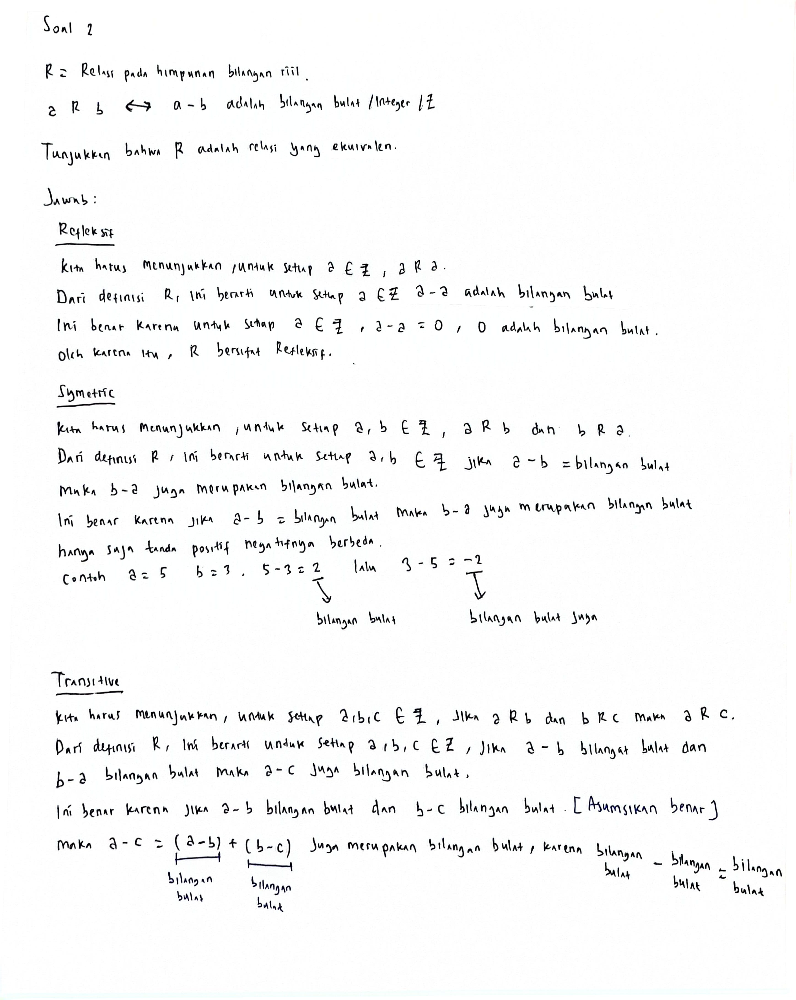
Didefinisikan relasi $T$ pada himpunan bilangan bulat $\mathbb{Z}$ sebagai berikut: Untuk semua bilangan bulat $m$ dan $n$, $m T n \iff 3 \mid (m - n)$. Relasi ini disebut kongruen modulo 3.
- Apakah $T$ refleksif?
- Apakah $T$ simetris?
- Apakah $T$ transitif?
- Apakah $T$ merupakan relasi ekuivalen?
- Tentukan kelas ekuivalennya (equivalence classes) dari relasi $T$ ini!
Mari kita selesaikan sub-soal ini secara berurutan:
-
a) Refleksif:
Ya, karena untuk setiap $m \in \mathbb{Z}$, berlaku $m - m = 0$. Kita tahu $0$ habis dibagi oleh $3$ (karena $0 = 0 \times 3$). Jadi $3 \mid (m - m)$ bernilai benar, sehingga $m T m$. -
b) Simetris:
Ya, karena jika $m T n$, maka $3 \mid (m - n)$. Ini berarti $m - n = 3k$ untuk suatu bilangan bulat $k$.
Maka $n - m = -(m - n) = -3k = 3(-k)$. Karena $-k$ tetap merupakan bilangan bulat, maka $3 \mid (n - m)$, sehingga $n T m$. -
c) Transitif:
Ya, karena jika $m T n$ dan $n T p$, maka $3 \mid (m - n)$ dan $3 \mid (n - p)$.
Artinya $m - n = 3k$ dan $n - p = 3j$ untuk $k, j \in \mathbb{Z}$.
Jika kita jumlahkan: $(m - n) + (n - p) = 3k + 3j \implies m - p = 3(k + j)$.
Karena $k+j$ adalah bilangan bulat, maka $3 \mid (m - p)$, sehingga $m T p$. -
d) Relasi Ekuivalen:
Karena sifat refleksif, simetris, dan transitif semuanya terpenuhi, maka relasi $T$ terbukti merupakan relasi ekuivalen. -
e) Kelas Ekuivalen (Equivalence Classes):
Kelas ekuivalen mengelompokkan bilangan bulat berdasarkan sisa hasil baginya oleh $3$. Ketika suatu bilangan bulat dibagi dengan $3$, sisa yang mungkin terbentuk hanya ada tiga, yaitu $0, 1, \text{ atau } 2$. Maka, kelas ekuivalennya dibagi menjadi 3 kelas:
-
Kelas $[0]$ (sisa 0): Himpunan semua bilangan bulat yang habis dibagi 3.
$[0] = \{..., -6, -3, 0, 3, 6, ...\} = \{3k \mid k \in \mathbb{Z}\}$ -
Kelas $[1]$ (sisa 1): Himpunan semua bilangan bulat yang jika dibagi 3 menyisakan 1.
$[1] = \{..., -5, -2, 1, 4, 7, ...\} = \{3k + 1 \mid k \in \mathbb{Z}\}$ -
Kelas $[2]$ (sisa 2): Himpunan semua bilangan bulat yang jika dibagi 3 menyisakan 2.
$[2] = \{..., -4, -1, 2, 5, 8, ...\} = \{3k + 2 \mid k \in \mathbb{Z}\}$
-
Kelas $[0]$ (sisa 0): Himpunan semua bilangan bulat yang habis dibagi 3.
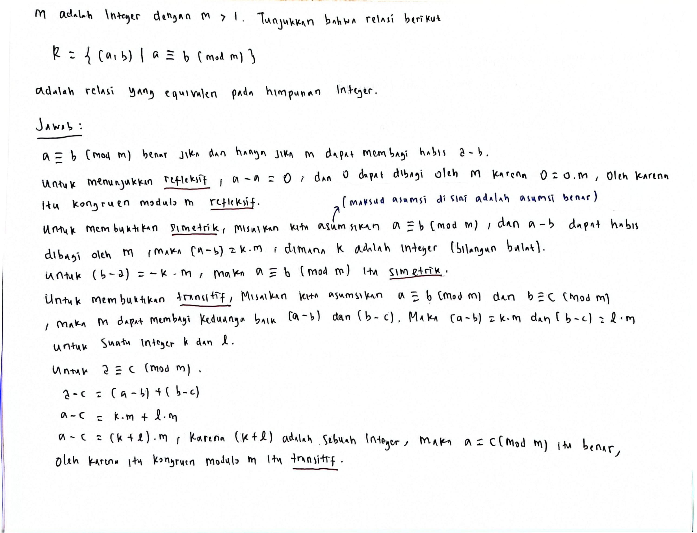
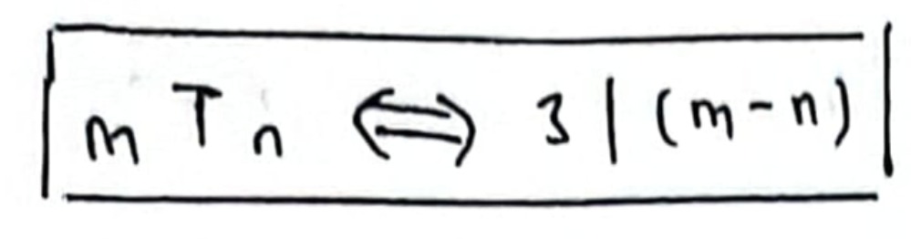
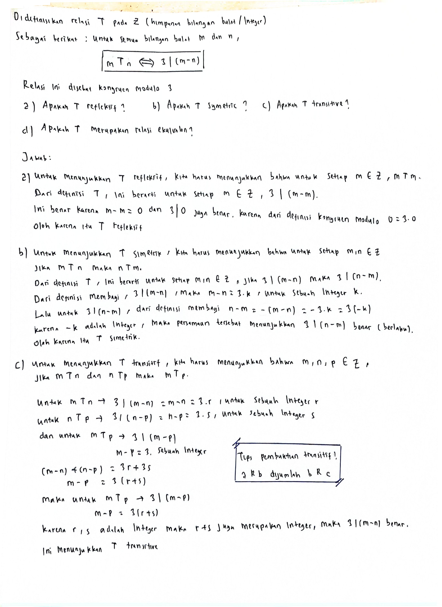
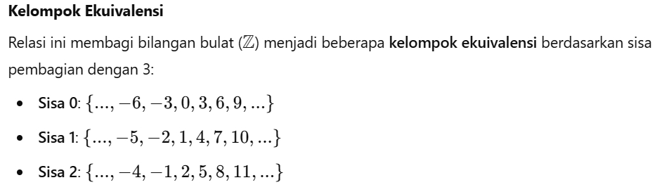
Misalkan $A = \mathbb{Z}$ (himpunan bilangan bulat). Didefinisikan relasi $R$ pada $A \times A$ dengan aturan:
$$(a, b) R (c, d) \iff a + d = b + c$$
Buktikan bahwa $R$ merupakan relasi ekuivalen pada $A \times A$!
Karena relasi ini bekerja pada pasangan berurutan (anggota himpunannya berupa koordinat $(x, y)$), mari kita buktikan ketiga sifatnya:
-
Refleksif:
Kita harus menunjukkan bahwa $(a, b) R (a, b)$ untuk setiap $(a, b) \in A \times A$.
Berdasarkan definisi relasi, syaratnya adalah:$$a + b = b + a$$
Karena penjumlahan bilangan bulat bersifat komutatif ($a+b$ selalu sama dengan $b+a$), pernyataan ini bernilai Benar. Jadi, $R$ bersifat refleksif. -
Simetris:
Asumsikan $(a, b) R (c, d)$ benar, yang berarti $a + d = b + c$.
Kita ingin menunjukkan bahwa $(c, d) R (a, b)$ juga benar, yaitu syaratnya: $c + b = d + a$.
Dari asumsi kita punya $a + d = b + c$. Kita balik posisinya secara aljabar (menggunakan sifat komutatif penjumlahan):$$b + c = a + d \implies c + b = d + a$$
Ini persis merupakan syarat untuk $(c, d) R (a, b)$. Jadi, $R$ bersifat simetris. -
Transitif:
Asumsikan $(a, b) R (c, d)$ dan $(c, d) R (e, f)$ benar. Maka berlaku dua persamaan:- $a + d = b + c$
- $c + f = d + e$
Mari kita jumlahkan kedua persamaan (i) dan (ii) di atas:$$(a + d) + (c + f) = (b + c) + (d + e)$$
$$a + d + c + f = b + c + d + e$$
Perhatikan bahwa variabel $c$ dan $d$ muncul di kedua ruas persamaan. Kita kurangi kedua ruas dengan $c$ dan $d$:$$a + f = b + e$$
Persamaan ini adalah syarat tepat untuk $(a, b) R (e, f)$. Jadi, $R$ bersifat transitif.
Karena $R$ terbukti refleksif, simetris, dan transitif, maka $R$ adalah relasi ekuivalen pada $A \times A$. (Relasi ini sebenarnya mendefinisikan pembentukan bilangan rasional/pecahan jika kita menggunakan perkalian).
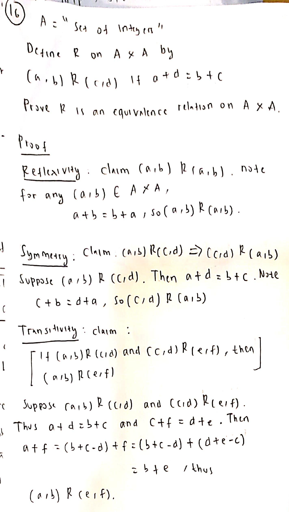
Misalkan $X$ adalah himpunan semua subset non-kosong dari $\{1, 2, 3\}$. Kita definisikan relasi $R$ pada $X$ sebagai berikut: Untuk setiap $A, B \in X$, $A R B \iff$ elemen terkecil di $A$ sama dengan elemen terkecil di $B$ ($\min(A) = \min(B)$).
- Tuliskan semua elemen dari himpunan $X$!
- Tunjukkan bahwa $R$ adalah relasi ekuivalen pada $X$!
- Tentukan semua kelas ekuivalen dari relasi $R$ ini!
-
Elemen Himpunan $X$:
Himpunan $X$ berisi semua subset non-kosong dari $\{1, 2, 3\}$. Kita daftarkan semua anggotanya:$$X = \{\{1\}, \{2\}, \{3\}, \{1, 2\}, \{1, 3\}, \{2, 3\}, \{1, 2, 3\}\}$$
Total terdapat $2^3 - 1 = 7$ elemen. -
Pembuktian Relasi Ekuivalen:
Kita tunjukkan pemenuhan tiga sifat relasi:- Refleksif: Untuk setiap subset $A \in X$, jelas berlaku $\min(A) = \min(A)$ (elemen terkecil di himpunan $A$ sama dengan dirinya sendiri). Jadi $A R A$ benar.
- Simetris: Jika $A R B$, berarti $\min(A) = \min(B)$. Secara aljabar ini menyiratkan $\min(B) = \min(A)$, sehingga $B R A$ benar.
- Transitif: Jika $A R B$ dan $B R C$, berarti $\min(A) = \min(B)$ dan $\min(B) = \min(C)$. Maka diperoleh $\min(A) = \min(C)$, sehingga $A R C$ benar.
-
Kelas Ekuivalen:
Kita kelompokkan elemen-elemen di $X$ berdasarkan nilai elemen terkecilnya ($\min$):-
Kelas untuk elemen terkecil $1$ (diwakili oleh $[\{1\}]$):
Semua subset yang memiliki angka terkecil $1$.
$[\{1\}] = \{\{1\}, \{1, 2\}, \{1, 3\}, \{1, 2, 3\}\}$ -
Kelas untuk elemen terkecil $2$ (diwakili oleh $[\{2\}]$):
Semua subset yang memiliki angka terkecil $2$ (tidak boleh mengandung $1$).
$[\{2\}] = \{\{2\}, \{2, 3\}\}$ -
Kelas untuk elemen terkecil $3$ (diwakili oleh $[\{3\}]$):
Semua subset yang memiliki angka terkecil $3$ (tidak boleh mengandung $1$ maupun $2$).
$[\{3\}] = \{\{3\}\}$
-
Kelas untuk elemen terkecil $1$ (diwakili oleh $[\{1\}]$):
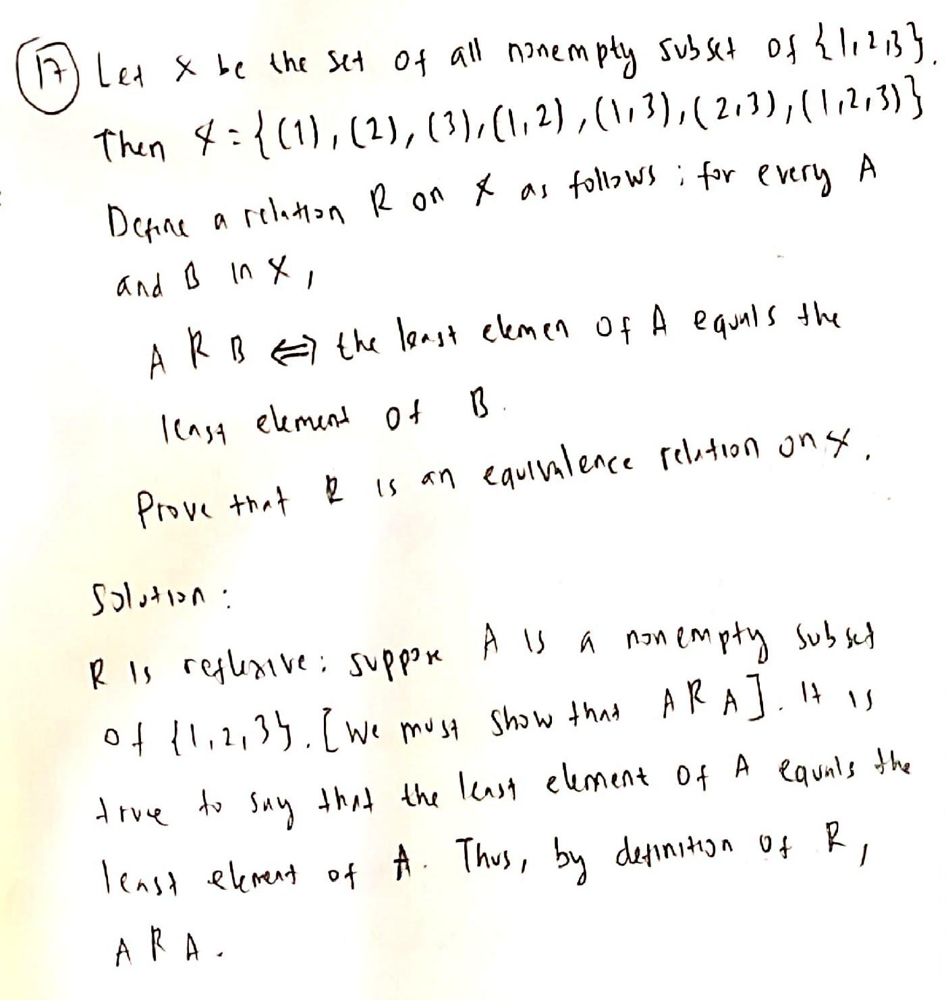
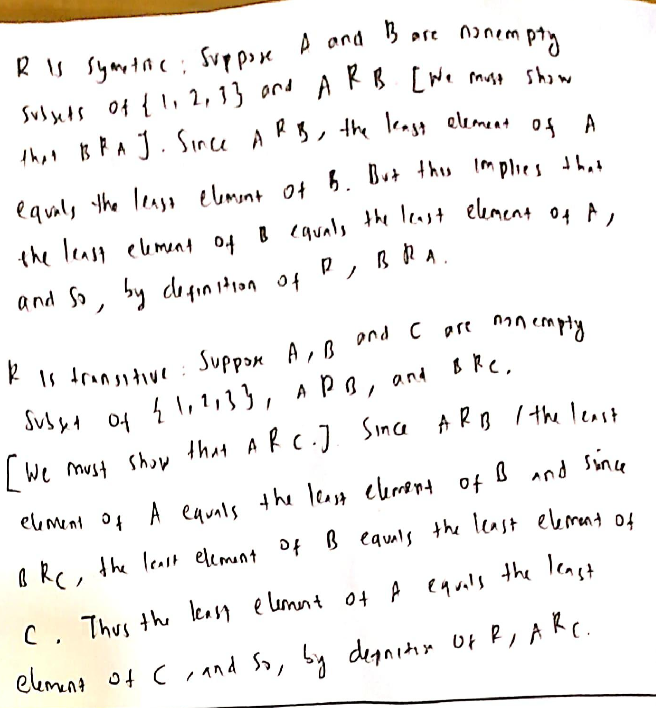